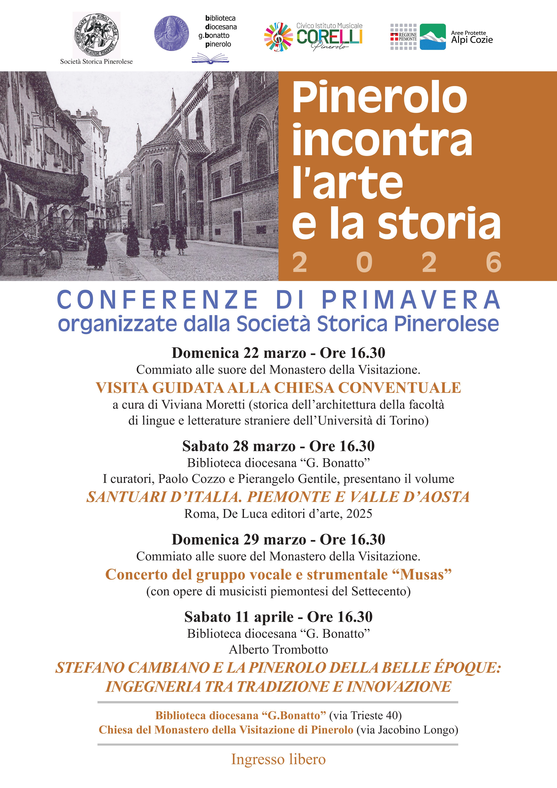

Conferenze di Primavera 2026
Ciclo di conferenze, visite guidate e un concerto organizzati dalla Società Storica Pinerolese in collaborazione con Biblioteca Diocesana "G. Bonatto", Civico Istituto Musicale Corelli e Aree Protette Alpi Cozie.
Programma degli incontri
-
Domenica 22 marzo — Ore 16.30
Commiato alle suore del Monastero della Visitazione
Visita guidata alla chiesa conventuale a cura di Viviana Moretti (storica dell'architettura, Università di Torino). -
Sabato 28 marzo — Ore 16.30
Biblioteca diocesana "G. Bonatto"
Presentazione del volume Santuari d'Italia. Piemonte e Valle d'Aosta a cura di Paolo Cozzo e Pierangelo Gentile (De Luca editori d'arte, 2025). -
Domenica 29 marzo — Ore 16.30
Commiato alle suore del Monastero della Visitazione
Concerto del gruppo vocale e strumentale "Musas" (musiche piemontesi del Settecento). -
Sabato 11 aprile — Ore 16.30
Biblioteca diocesana "G. Bonatto"
Conferenza di Alberto Trombotto:
Stefano Cambiano e la Pinerolo della Belle Époque: ingegneria tra tradizione e innovazione.
